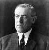

Aynı zamanda üniversite profesörü olan Başkan Woodrow Wilson (1856–1924), Amerika dış politikasında aktif bir rol benimseyerek önemli bir değişime neden olmuştur. Wilson’un ikinci görev döneminde ABD I. Dünya Savaşı’na girmiş, ilk kez Avrupa’ya savaş güçleri göndermiştir. Bu olay ABD’nin küresel bir güç haline gelmesinde önemli bir dönüm noktasıdır.

Presbiteryen bir vaizin oğlu olan Wilson, Virjinya eyaletindeki Staunton’da doğdu. Princeton Üniversitesi’nde eğitim gördü. Baltimore’daki Johns Hopkins Üniversitesi’nde 1886 yılında tarih doktorasını tamamladı. 1890’da Princeton’a döndü. Öğrencileri arasında çok popülerdi. 1902’de rektör, 1910 yılında Demokrat Parti’den New Jersey valisi oldu. 1912 yılında başkanlık seçimlerini kazandı ve 1916 yılında tekrar seçildi.
1914 yılında Avrupa’da I. Dünya Savaşı’nın patlak vermesinin ardından ABD’nin tarafsız kalmasını savundu. Gerçekten de 1916 yılında yapılan seçimlere “O bizi savaştan uzak tuttu,” sloganıyla girdi. Ancak seçilmesini izleyen altı ay içinde Alman denizaltıları Amerikan gemilerine saldırdılar. Bu durum Amerikan kamuoyunda Alman karşıtlığının yükselmesine neden oldu. Wilson kongreye 2 Nisan 1917’de savaş ilan edilmesini önerdi. Amerika’nın savaştan beklentilerini ünlü “14 Nokta” konuşmasında açıkladı. Konuşmasında dile getirdiği hedeflerin arasında Avrupa’daki imparatorlukların dağıtılması ve gelecekte sorunların konuşulup çözümlenebileceği bir Milletler Cemiyeti’nin kurulması da vardı.
Amerika’nın katılımı savaşın yönünün İttifak Devletleri aleyhine dönmesini sağladı. Kasım 1918’de ateşkes ilan edildi. Sonraki yıl Wilson Avrupa’yı ziyaret eden muvazzaf ilk ABD başkanı oldu. Barış görüşmeleri için Paris’e gitti. Antlaşma maddelerinin içinde Wilson’un dikkat çektiği on dört noktanın çoğu bulunuyordu. Örneğin, antlaşma kapsamında bir Milletler Cemiyeti kurulacaktı. Fakat ülkesine geri döndüğünde dış politikada müdahaleciliğe karşı gelenleri antlaşmayı onaylamaya ikna edemedi. Muhalefetin başını Massachusetts senatörü Henry Cabot Lodge (1850–1924) çekiyordu. Bu grup Milletler Cemiyeti’nin ABD bağımsızlığını zedeleyeceğinden korkuyordu.
1919 yılında Wilson felç geçirdi. Artık hükümeti yönetecek durumda değildi. Versay Antlaşması onaylanmadı ve ABD Milletler Cemiyetine’ne katılmadı. Wilson 1924 yılında Washington’da öldü.
Ek Bilgiler
1- Wilson’un ilk adı Thomas’tı. Çocukluğunda ona Tommy derlerdi. Princeton’dan mezun olduktan sonra ikinci ismi olan Woodrow ile anılmaya başlandı.
2- Disleksik bir çocuk olan Wilson on yaşına kadar okuma öğrenemedi.
3- Wilson ABD’nin doktorası olan tek başkanıdır. Aynı zamanda başkanlığa seçilen tek akademisyendir.